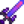
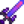

Galaxy Sword
| Galaxy Sword | |
| It's unlike anything you've ever seen. | |
| Information | |
| Type: | Sword |
| Level: | 13 |
| Source: | |
| Damage: | 60-80 |
| Critical Strike Chance: | .02 |
| Stats: | |
| Adventurer's Guild | |
| Purchase Price: | |
| Sell Price: | |
The Galaxy Sword is a sword weapon that can be obtained by taking a Prismatic Shard to the Three Pillars in the Calico Desert. While holding the shard, enter the centermost tile between the three pillars. The Prismatic Shard will be consumed.
After obtaining a Galaxy Sword, players will not be able to use a Prismatic Shard to obtain another. If lost or sold, another sword may be purchased from Marlon for  50,000g.
50,000g.
Obtaining a Galaxy Sword unlocks the Galaxy Hammer and Galaxy Dagger in the Adventurer's Guild shop.
The Galaxy Sword can be combined with  Galaxy Soul (3) and
Galaxy Soul (3) and  Cinder Shard (60) in the Forge to create an  Infinity Blade.
Cinder Shard (60) in the Forge to create an  Infinity Blade.
Discovering
The Galaxy Sword can be discovered in game by reading the Dwarvish headstone in the Pelican Town graveyard. You need to obtain the Dwarvish Translation Guide before you can read the headstone.
History
- 1.0: Introduced.
- 1.1: After obtaining the sword, it can be purchased from Marlon. Now unlocks the Galaxy Hammer and Galaxy Dagger for purchase.
- 1.4: Fixed bug allowing wallpaper #75 to be used in place of a Prismatic Shard at the Three Pillars. Fixed bug where the entire stack of Prismatic Shards would be consumed at the Three Pillars.
- 1.5: Can now be changed into an Infinity Blade. Level lowered from 26 to 13, sell price lowered from
 1,300g to 650g.
1,300g to 650g.